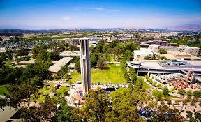
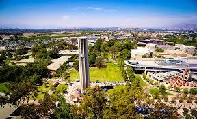
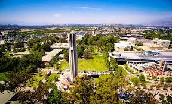

Marisol Gutierrez
As a student at the University of California, Riverside, I intend to major in Liberal Studies to pursue my dream of being an elementary school teacher. Since I began my higher education journey at Riverside City College in the Winter of 2020, I have had the goal to transfer to UCR. In order to successfully prepare for my intended major, I have been on an instructional pathway in Elementary Teacher Education at RCC. In this pathway, I have taken courses that include: Child Growth and Development, Psychology and Sociology. My course in Child Growth and Development especially solidified my major and career choice, and I look forward to learning more about the matter at UCR. These courses provided me with a foundation to continue building on my knowledge and skills when teaching youth.
Additionally, I have challenged myself every term to create systems that would ensure I succeed in every course I take. I have had to balance my education and a busy work schedule these past years. While it was challenging the first term, I have learned how to be organized, proactive and resourceful. I also learned that my education is my priority and I intend to keep it as such until I am in my profession. In my time at RCC, I have developed a work ethic I am proud of and know can help me succeed in my upper-division courses at UCR. As a first-generation student, I have encountered obstacles in my higher education journey, but I am confident in my ability to overcome them. With that said, I am ready and excited for upper-division courses at UCR and to further my education.
To work towards my goal of becoming a teacher, I transferred to the University of California, Riverside as a Liberal Studies major, and I have taken as many courses available to me to prepare me for this moment. I took classes that include the following: Education in a Diverse Society, The Exceptional Child, Learning Theories and Psychology, and Children Special Needs. Additionally, I have worked at Raincross High School, a continuation school, for the past two years as an EL (English Learner) Tutor. Although they were not elementary school students, my work with students at Raincross has been rewarding and confirmed that I want to continue building a career in education. In my day to day, I help students complete their credits for subjects like Math, Government, and English, and I provide translations between English and Spanish as needed. I also take the role of an advocate between the students and their teachers in the case that I notice that a student requires additional resources or support in order to complete their credits. It is not uncommon for my students to need additional support due to language and educational barriers, and I find the process of supporting their needs and growth rewarding.
Experience
English Learner Support Tutor
• Translate School curriculum and Homework for students
• Help with communication between admin and students
• Tutor with any additional help they may need
Education
UC Riverside
Portfolio
 

